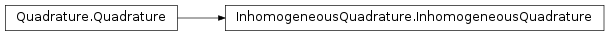

The WaveBlocks Project
@author: R. Bourquin @copyright: Copyright (C) 2010, 2011, 2012 R. Bourquin @license: Modified BSD License

Create a quadrature rule of the given order. @param qorder: The order of the quadrature rule.
Return the I{GaussHermiteQR} instance used for quadrature. @return: The current instance of the quadrature rule.
Mix the two parameter sets $Pi_bra$ and $Pi_ket$ from the bra and the ket wavepacket. @param Pibra: The parameter set $Pi$ from the bra. @param Piket: The parameter set $Pi$ from the ket. @return: The mixed parameters $q0$ and $QS$. (See the theory for details.)
Set the I{GaussHermiteQR} instance used for quadrature. @param QR: The new I{GaussHermiteQR} instance.
Transform the quadrature nodes such that they fit the given wavepacket. @param Pibra: The parameter set $Pi$ from the bra. @param Piket: The parameter set $Pi$ from the ket. @param eps: The epsilon of the wavepacket. @keyword QR: An optional quadrature rule providing the nodes.